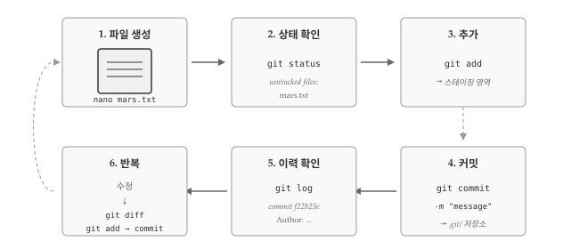
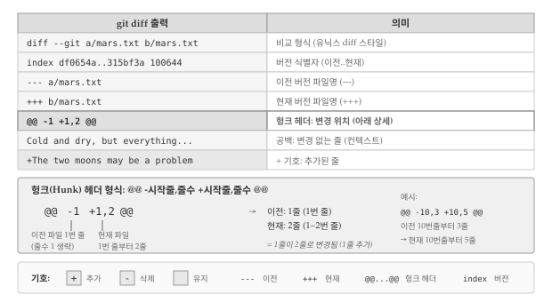
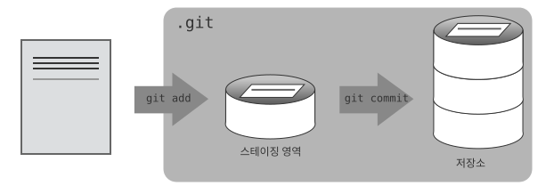
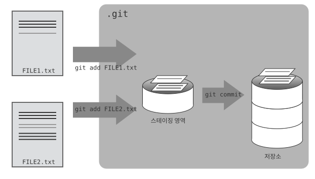

18 변경사항 추적
Git 저장소를 초기화했다면 이제 실제로 파일을 만들고 변경사항을 추적할 차례다. 버전 관리 핵심은 파일 변경 이력을 체계적으로 기록하는 것이며, Git에서는 추가(add)와 커밋(commit) 두 단계로 변경사항을 기록한다. 파일을 생성하고, 수정하고, 변경사항을 저장소에 기록하는 전체 흐름을 직접 실습하면서 Git의 기본 작업 방식을 익혀보자.

실습을 시작하기 전에 현재 작업 디렉토리가 올바른지 확인해야 한다. Git 명령어는 현재 디렉토리를 기준으로 동작하므로, 의도한 저장소가 아닌 곳에서 명령을 실행하면 예상치 못한 결과가 나올 수 있다. pwd 명령어로 현재 위치를 확인하고, planets 디렉토리에 있는지 점검한다.
$ pwd
/home/vlad/Desktop/planets만약 앞선 실습에서 moons 하위 디렉토리를 만들고 그 안에서 작업했다면, cd .. 명령어로 상위 디렉토리인 planets로 돌아와야 한다.
$ pwd
/home/vlad/Desktop/planets/moons$ cd ..18.1 첫 번째 파일 생성과 추적
Git 저장소가 준비되었으니 첫 번째 파일을 만들어 추적해보자. 버전 관리의 시작점은 항상 파일 생성이며, 새로 만든 파일을 Git이 인식하고 추적하도록 명시적으로 지정해야 한다.
화성 전진기지 프로젝트의 기록을 담을 mars.txt 파일을 생성한다. 파일 편집에는 nano 편집기를 사용하지만, 본인이 선호하는 편집기를 사용해도 무방하다. 앞서 core.editor로 설정한 편집기와 다른 것을 사용해도 된다. 텍스트 편집기 선택에 관한 자세한 내용은 챗GPT 유닉스 쉘 “어떤 편집기가 좋을까요?” 부분을 참고한다.
$ nano mars.txtmars.txt 파일에 화성에 대한 첫 인상을 기록한다. 텍스트 편집기가 열리면 아래 내용을 입력한다.
Cold and dry, but everything is my favorite color입력을 마쳤으면 파일을 저장하고 편집기를 종료한다. nano 편집기에서는 Ctrl+O로 저장하고 Ctrl+X로 종료한다. 파일이 제대로 생성되었는지 ls 명령어로 디렉토리 내용을 확인하고, cat 명령어로 파일 내용을 출력해본다.
$ ls
mars.txt$ cat mars.txt
Cold and dry, but everything is my favorite colorgit status 명령어로 프로젝트 상태를 확인하면 Git이 새 파일을 인지했음을 알 수 있다.
$ git status
On branch master
Initial commit
Untracked files:
(use "git add <file>..." to include in what will be committed)
mars.txt
nothing added to commit but untracked files present (use "git add" to track)“untracked files” 메시지는 디렉토리에 Git이 아직 추적하지 않는 파일이 있다는 뜻이다. git add 명령어로 Git에게 파일 추적을 시작하도록 지시한다.
$ git add mars.txtgit add 명령어는 별다른 출력 없이 조용히 완료된다. 파일이 제대로 스테이징 영역에 추가되었는지 확인하려면 git status를 다시 실행해본다.
$ git status
On branch master
Initial commit
Changes to be committed:
(use "git rm --cached <file>..." to unstage)
new file: mars.txtGit이 mars.txt 파일을 추적 대상으로 인식했지만, 아직 저장소에 변경사항이 기록된 것은 아니다. 변경사항을 영구히 저장하려면 커밋 명령어를 실행해야 한다.
$ git commit -m "Start notes on Mars as a base"
[master (root-commit) f22b25e] Start notes on Mars as a base
1 file changed, 1 insertion(+)
create mode 100644 mars.txtgit commit 명령어를 실행하면 Git은 git add로 준비된 모든 변경사항을 .git 디렉토리 내부에 영구 저장한다. 저장된 스냅샷을 커밋(commit) 또는 리비전(revision)이라 부르며, 각 커밋은 고유한 식별자를 갖는다. 위 예시에서 f22b25e가 바로 커밋 식별자의 축약형이다. 실습 환경에 따라 다른 값이 표시될 수 있다.
-m 플래그(“message”의 약자)로 커밋 메시지를 함께 입력한다. 커밋 메시지는 나중에 변경 이유를 파악하는 데 중요한 역할을 한다. -m 옵션 없이 git commit을 실행하면 Git이 설정된 편집기(nano 또는 core.editor에서 지정한 편집기)를 열어 긴 메시지를 작성할 수 있게 해준다.
좋은 커밋 메시지는 변경사항을 간결하게 요약하는 한 줄(영문 기준 50자 이하)로 시작한다. “If applied, this commit will(적용되면 이 커밋은 ~할 것이다)”라는 문장 형식에 맞추어 작성하면 좋다. 상세한 설명이 필요하면 요약줄 다음에 빈 줄을 두고 본문을 작성한다. 본문에는 변경 이유와 영향 범위를 기록한다.
18.1.1 좋은 커밋 메시지 선택하기
좋은 커밋 메시지와 나쁜 커밋 메시지의 차이를 직접 비교해보자. mars.txt 파일에 “But the Mummy will appreciate the lack of humidity”라는 줄을 추가한 후 커밋한다고 가정하면, 다음 세 가지 메시지 중 어떤 것이 가장 적절할까?
첫 번째 후보는 “Changes”다. 무엇이 변경되었는지 전혀 알 수 없어 나중에 로그를 검토할 때 쓸모가 없다. 두 번째 후보는 “Added line ‘But the Mummy will appreciate the lack of humidity’ to mars.txt”다. 변경 내용을 그대로 옮겨 적었지만, git diff나 git show로 언제든 확인할 수 있는 정보를 반복하는 셈이다. 세 번째 후보는 “Discuss effects of Mars’ climate on the Mummy”다. 짧고 명확하며 왜 변경했는지 의도를 전달한다.
정답은 세 번째다. 커밋 메시지는 “무엇을 바꿨는가”보다 “왜 바꿨는가”에 초점을 맞춰야 한다.
커밋이 완료된 후에는 git status로 저장소 상태를 확인하는 것이 좋다. 모든 변경사항이 저장소에 제대로 반영되었는지, 스테이징 영역에 남아 있는 파일이 없는지 점검할 수 있다.
$ git status
On branch master
nothing to commit, working directory clean“nothing to commit, working directory clean” 메시지가 표시되면 모든 변경사항이 저장소에 반영된 상태다. 작업 이력을 확인하려면 git log 명령어를 사용한다.
$ git log
commit f22b25e3233b4645dabd0d81e651fe074bd8e73b
Author: Vlad Dracula <vlad@tran.sylvan.ia>
Date: Thu Aug 22 09:51:46 2013 -0400
Start notes on Mars as a basegit log는 저장소의 모든 커밋을 시간 역순(최신 순)으로 보여준다. 각 항목에는 전체 커밋 식별자, 작성자 정보, 작성 일시, 커밋 메시지가 포함된다. 전체 식별자는 앞서 본 축약형 f22b25e로 시작하는 긴 문자열이다.
18.2 파일 수정과 변경사항 추적
파일을 처음 추적하기 시작한 후에도 계속해서 내용을 수정하고 변경사항을 기록할 수 있다. Git의 진정한 가치는 파일이 어떻게 변해왔는지 추적하는 데 있으며, 수정 전후의 차이를 확인하는 기능이 핵심이다.
화성의 달이 늑대인간에게 어떤 영향을 미칠지에 대한 내용을 mars.txt 파일에 추가한다. 편집기로 파일을 열어 두 번째 줄을 작성하고 저장한다.
$ nano mars.txt
$ cat mars.txt
Cold and dry, but everything is my favorite color
The two moons may be a problem for Wolfmangit status로 상태를 확인하면 Git이 파일 변경을 감지했음을 알 수 있다.
$ git status
On branch master
Changes not staged for commit:
(use "git add <file>..." to update what will be committed)
(use "git checkout -- <file>..." to discard changes in working directory)
modified: mars.txt
no changes added to commit (use "git add" and/or "git commit -a")마지막 줄 “no changes added to commit”에 주목하자. 파일이 수정되었지만 git add로 스테이징 영역에 올리거나 git commit으로 저장소에 기록하지 않은 상태다.
커밋하기 전에 변경사항을 검토하는 습관을 들이는 것이 좋다. git diff 명령어는 현재 파일 상태와 마지막 커밋 간의 차이를 보여준다.
$ git diff
diff --git a/mars.txt b/mars.txt
index df0654a..315bf3a 100644
--- a/mars.txt
+++ b/mars.txt
@@ -1 +1,2 @@
Cold and dry, but everything is my favorite color
+The two moons may be a problem for Wolfman출력 결과가 암호처럼 보이지만, patch 같은 도구가 파일을 재구성하는 데 사용하는 표준 형식이다. 그림 19.2 은 각 줄의 의미를 정리한 것이다. 특히 @@ -1 +1,2 @@ 형태의 헝크(hunk) 헤더는 변경이 발생한 위치를 나타내며, “이전 파일 1번 줄이 현재 파일에서 1~2번 줄로 변경됨”을 의미한다. 헝크 헤더를 읽을 줄 알면 대규모 diff 출력에서도 원하는 변경 지점을 빠르게 찾을 수 있다.

변경 내용을 검토했으니 저장소에 기록할 차례다. 앞서 배운 대로 커밋을 시도해본다. 변경사항이 정상적으로 커밋될지, 아니면 예상과 다른 결과가 나올지 직접 확인해보자.
$ git commit -m "Add concerns about effects of Mars' moons on Wolfman"
$ git status
On branch master
Changes not staged for commit:
(use "git add <file>..." to update what will be committed)
(use "git checkout -- <file>..." to discard changes in working directory)
modified: mars.txt
no changes added to commit (use "git add" and/or "git commit -a")커밋이 실행되지 않았다. git add를 먼저 실행하지 않았기 때문이다. 수정한 파일을 다시 스테이징 영역에 추가한 후 커밋한다.
18.2.1 올바른 커밋 순서 이해하기
Git 초보자가 자주 겪는 실수가 git add 없이 바로 git commit을 실행하는 것이다. 로컬 Git 저장소에 myfile.txt 파일의 변경사항을 저장하려면 어떤 명령어 조합이 필요할까?
git commit -m "my recent changes"만 실행하면 파일이 스테이징 영역에 없으므로 커밋되지 않는다. git init myfile.txt와 git commit을 순서대로 실행하는 것도 틀렸다. git init은 새 저장소를 생성하는 명령어이지 파일을 추가하는 명령어가 아니기 때문이다. git commit -m myfile.txt "my recent changes" 형식도 문법 오류다.
올바른 순서는 git add myfile.txt로 스테이징 영역에 추가한 후 git commit -m "my recent changes"로 커밋하는 것이다. 변경사항을 기록하려면 항상 add → commit 순서를 따라야 한다.
$ git add mars.txt
$ git commit -m "Add concerns about effects of Mars' moons on Wolfman"
[master 34961b1] Add concerns about effects of Mars' moons on Wolfman
1 file changed, 1 insertion(+)Git이 커밋 전에 반드시 git add를 요구하는 이유는 모든 변경사항을 한꺼번에 커밋하고 싶지 않은 경우가 있기 때문이다. 예를 들어 논문을 작성할 때, 본문에 추가한 인용문과 참고문헌은 커밋하고 싶지만 아직 작성 중인 결론 부분은 제외하고 싶을 수 있다.
Git은 스테이징 영역(staging area)이라는 중간 단계를 제공하여 선택적 커밋을 가능하게 한다. 스테이징 영역에는 다음 커밋에 포함할 변경 묶음(change set)을 모아둔다.
18.3 스테이징 영역
스테이징 영역(Staging Area)은 Git의 핵심 개념 중 하나로, 작업 디렉토리와 저장소 사이에 위치한 중간 단계다. 커밋에 포함할 변경사항을 선별적으로 모아두는 공간이며, 스테이징 영역을 활용하면 논리적으로 관련 있는 변경사항만 묶어서 커밋할 수 있다.
Git을 사진 촬영에 비유하면, git add는 사진에 찍힐 대상을 프레임 안에 배치하는 것이고, git commit은 실제로 셔터를 누르는 것이다. 스테이징 영역에 아무것도 없는 상태에서 git commit을 실행하면 Git이 git commit -a 또는 git commit --all 사용을 권유한다. “모두 모여서 사진 찍자”는 의미인데, 무심코 사용하면 의도치 않은 변경사항까지 커밋에 포함될 수 있다.
따라서 항상 git add로 명시적으로 스테이징 영역에 추가하는 습관을 들이는 것이 좋다. 실수로 원치 않는 파일을 스테이징 영역에 올렸다면 “git undo commit” 또는 git reset을 검색해보자.

그림 18.3 는 작업 디렉토리에서 스테이징 영역을 거쳐 저장소로 변경사항이 이동하는 흐름을 보여준다. 실습을 통해 확인해보자. 먼저 파일에 한 줄을 더 추가한다.
$ nano mars.txt
$ cat mars.txt
Cold and dry, but everything is my favorite color
The two moons may be a problem for Wolfman
But the Mummy will appreciate the lack of humidity$ git diff
diff --git a/mars.txt b/mars.txt
index 315bf3a..b36abfd 100644
--- a/mars.txt
+++ b/mars.txt
@@ -1,2 +1,3 @@
Cold and dry, but everything is my favorite color
The two moons may be a problem for Wolfman
+But the Mummy will appreciate the lack of humiditygit diff 출력에서 + 기호로 표시된 줄이 새로 추가된 내용이다. 변경사항을 스테이징 영역에 추가한 후 git diff가 어떻게 달라지는지 확인해보자.
$ git add mars.txt
$ git diff출력 결과가 없다. git diff는 작업 디렉토리와 스테이징 영역 간의 차이를 보여주는데, 변경사항이 이미 스테이징 영역에 올라갔으므로 차이가 없는 것이다. 스테이징 영역과 마지막 커밋 간의 차이를 보려면 --staged 옵션을 사용한다.
$ git diff --staged
diff --git a/mars.txt b/mars.txt
index 315bf3a..b36abfd 100644
--- a/mars.txt
+++ b/mars.txt
@@ -1,2 +1,3 @@
Cold and dry, but everything is my favorite color
The two moons may be a problem for Wolfman
+But the Mummy will appreciate the lack of humidity마지막 커밋과 스테이징 영역 사이의 차이가 표시된다.
18.3.1 여러 파일 한꺼번에 커밋하기
스테이징 영역에는 여러 파일의 변경사항을 담을 수 있다. 논리적으로 관련 있는 변경사항을 하나의 커밋으로 묶으면 나중에 이력을 추적하기 훨씬 쉬워진다.
직접 실습해보자. 먼저 mars.txt 파일에 금성(Venus)을 전진기지 후보로 고려한다는 내용을 추가한다. 그 다음 venus.txt 파일을 새로 만들어 금성에 관한 첫 생각을 기록한다.
$ nano mars.txt # "Maybe I should start with a base on Venus." 추가
$ nano venus.txt # "Venus is a nice planet..." 작성두 파일을 스테이징 영역에 추가하고 함께 커밋한다. git add 명령어에 여러 파일명을 공백으로 구분하여 전달하거나, 파일별로 따로 실행해도 된다.
$ git add mars.txt venus.txt
$ git commit -m "Write plans to start a base on Venus"하나의 커밋에 “화성 파일에 금성 언급 추가”와 “금성 파일 신규 생성”이라는 두 변경사항이 함께 기록된다. 관련 있는 작업을 묶어서 커밋하면 나중에 “금성 관련 작업을 언제 시작했는가?”라는 질문에 명확히 답할 수 있다.
스테이징 영역에 추가된 변경사항을 저장소에 기록할 차례다. 미라(Mummy)가 화성의 건조한 기후를 좋아할 것이라는 내용을 담은 커밋 메시지를 작성한다.
$ git commit -m "Discuss concerns about Mars' climate for Mummy"
[master 005937f] Discuss concerns about Mars' climate for Mummy
1 file changed, 1 insertion(+)커밋 완료 후 git status로 저장소 상태를 점검한다. 스테이징 영역에 남아 있는 변경사항이 없는지, 작업 디렉토리가 깨끗한 상태인지 확인하는 습관을 들이면 실수를 예방할 수 있다.
$ git status
On branch master
nothing to commit, working directory clean“nothing to commit, working directory clean” 메시지는 모든 변경사항이 저장소에 반영되었음을 의미한다. 세 번째 커밋까지 완료했으니 git log로 전체 작업 이력을 확인해보자.
$ git log
commit 005937fbe2a98fb83f0ade869025dc2636b4dad5
Author: Vlad Dracula <vlad@tran.sylvan.ia>
Date: Thu Aug 22 10:14:07 2013 -0400
Discuss concerns about Mars' climate for Mummy
commit 34961b159c27df3b475cfe4415d94a6d1fcd064d
Author: Vlad Dracula <vlad@tran.sylvan.ia>
Date: Thu Aug 22 10:07:21 2013 -0400
Add concerns about effects of Mars' moons on Wolfman
commit f22b25e3233b4645dabd0d81e651fe074bd8e73b
Author: Vlad Dracula <vlad@tran.sylvan.ia>
Date: Thu Aug 22 09:51:46 2013 -0400
Start notes on Mars as a base줄 단위 비교로는 세부 변경 내용을 파악하기 어려울 때가 있다. git diff --color-words 옵션을 사용하면 변경된 단어만 색상으로 강조되어 문장 내 수정 사항을 한눈에 확인할 수 있다.
git log 출력이 화면보다 길면 Git이 자동으로 페이저(pager) 프로그램을 실행한다. 페이저가 실행되면 화면 하단에 프롬프트 대신 :가 표시되는데, Q로 종료하고 Spacebar로 다음 페이지로 이동한다. /검색어를 입력하면 특정 단어를 검색할 수 있고, N으로 다음 검색 결과로 넘어간다.
커밋 이력이 길어지면 git log -1처럼 숫자를 붙여 출력 개수를 제한하거나, --oneline 옵션으로 각 커밋을 한 줄로 요약할 수 있다. 여러 옵션을 조합한 git log --oneline --graph --all --decorate는 브랜치 구조를 시각적으로 보여주어 프로젝트 이력을 파악하는 데 유용하다.
$ git log --oneline --graph --all --decorate
* 005937f Discuss concerns about Mars' climate for Mummy (HEAD, master)
* 34961b1 Add concerns about effects of Mars' moons on Wolfman
* f22b25e Start notes on Mars as a base18.4 디렉토리와 파일 추가
프로젝트가 커지면 파일을 디렉토리로 구조화하게 된다. Git에서 디렉토리를 다루는 방식은 파일과 다르므로 두 가지 특성을 알아두어야 한다.
Git은 빈 디렉토리를 추적하지 않는다. 디렉토리 자체가 아닌 그 안에 담긴 파일만 추적 대상으로 삼기 때문이다. mkdir directory로 디렉토리를 생성하고 git add directory를 실행해도 git status에는 아무것도 나타나지 않는다. 빈 디렉토리를 저장소에 포함시켜야 한다면 .gitkeep 같은 빈 파일을 넣어두는 관례가 있다. .gitkeep은 특별한 파일이 아니라 단지 디렉토리를 비어 있지 않게 만드는 용도이며, 파일명은 원하는 대로 지어도 된다.
반면 파일이 들어 있는 디렉토리를 추가하면 그 안의 모든 파일이 함께 스테이징 영역에 올라간다. spaceships 디렉토리를 만들고 파일을 추가한 뒤 git add spaceships를 실행하면 디렉토리 내 모든 파일이 한꺼번에 추적 대상이 된다.
$ mkdir spaceships
$ touch spaceships/apollo-11 spaceships/sputnik-1
$ git add spaceships
$ git status
$ git commit -m "Add some initial thoughts on spaceships"18.5 커밋 작업흐름 요약
지금까지 배운 Git의 기본 작업 흐름을 정리해보자. 변경사항을 저장소에 기록하는 과정은 git add와 git commit 두 단계로 이루어진다. 먼저 git add로 변경된 파일을 스테이징 영역에 추가하고, 이어서 git commit으로 스테이징 영역에 모인 변경사항을 저장소에 영구 기록한다. 두 단계를 분리함으로써 여러 파일 중 일부만 선택적으로 커밋하거나, 논리적으로 관련 있는 변경사항을 하나의 커밋으로 묶을 수 있다.
그림 18.4 은 작업 디렉토리에서 스테이징 영역을 거쳐 저장소로 변경사항이 이동하는 흐름을 보여준다.

18.5.1 bio 저장소 만들기
지금까지 배운 내용을 종합하여 새 저장소를 처음부터 만들어보자. 저장소 생성, 파일 추가, 커밋, 수정, 변경사항 확인까지 전체 흐름을 한 번에 실습한다.
먼저 bio라는 디렉토리를 만들고 Git 저장소로 초기화한다.
$ cd ..
$ mkdir bio && cd bio
$ git initme.txt 파일에 3줄짜리 자기소개를 작성하고 첫 번째 커밋을 생성한다.
$ nano me.txt # 3줄 자기소개 작성
$ git add me.txt
$ git commit -m 'Adding biography file'파일에서 한 줄을 수정하고 네 번째 줄을 추가한다. git diff 명령어로 원본과 수정본의 차이를 확인한다.
$ nano me.txt # 한 줄 수정, 네 번째 줄 추가
$ git diff me.txt # 변경사항 확인- 기호로 표시된 줄이 삭제되거나 수정된 내용이고, + 기호로 표시된 줄이 추가된 내용이다. 커밋 전에 git diff로 변경사항을 확인하는 습관을 들이면 의도치 않은 수정이 커밋에 포함되는 것을 방지할 수 있다.
💡 생각해볼 점
Git의 변경사항 추적은 git add와 git commit 두 단계로 이루어진다. 처음에는 왜 한 번에 저장하지 않고 굳이 두 단계를 거쳐야 하는지 의문이 들 수 있다. 스테이징 영역(staging area)이라는 중간 단계가 존재하는 이유는 “논리적으로 관련 있는 변경사항만 묶어서 커밋”하기 위해서다. 논문을 작성할 때 본문 수정과 참고문헌 추가는 함께 커밋하되, 아직 미완성인 결론 부분은 다음 커밋으로 미루는 식이다.
커밋 메시지는 미래의 나 자신과 동료를 위한 기록이다. “수정함”, “버그 fix” 같은 모호한 메시지는 나중에 특정 변경사항을 찾을 때 아무런 도움이 되지 않는다. “Add concerns about Mars’ moons on Wolfman”처럼 변경 이유와 맥락을 담은 메시지가 좋다. 영문 기준 50자 이내로 요약하고, 상세 설명이 필요하면 빈 줄 뒤에 본문을 추가하는 관례를 따르면 로그 출력도 깔끔해진다.
git diff는 커밋 전에 변경사항을 검토하는 필수 도구다. 무심코 git add .로 모든 파일을 올리면 디버깅용 print 문이나 임시 파일까지 커밋에 포함될 수 있다. git diff로 변경 내용을 확인하고, git diff --staged로 스테이징 영역에 올라간 내용을 재확인하는 습관이 실수를 줄여준다. 작업 디렉토리, 스테이징 영역, 저장소라는 세 공간의 관계를 이해하면 Git의 동작 방식이 훨씬 명확해진다.
변경사항을 기록하는 방법을 익혔으니, 다음 단계는 기록된 이력을 활용하는 것이다. 특정 커밋 시점의 파일 내용을 확인하거나, 과거 버전으로 되돌리거나, 두 커밋 간의 차이를 비교하는 작업이 가능해진다. Git의 진정한 가치는 “실수해도 괜찮다”는 안전망을 제공하는 데 있다.